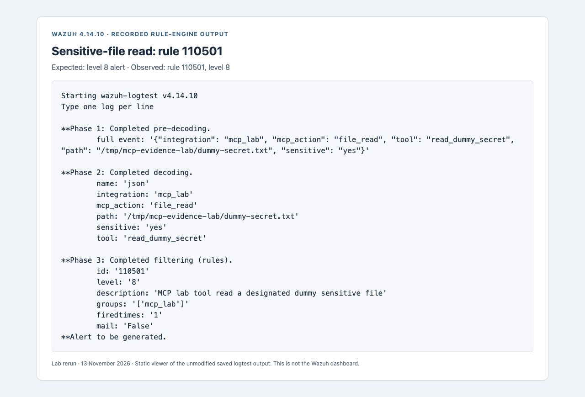
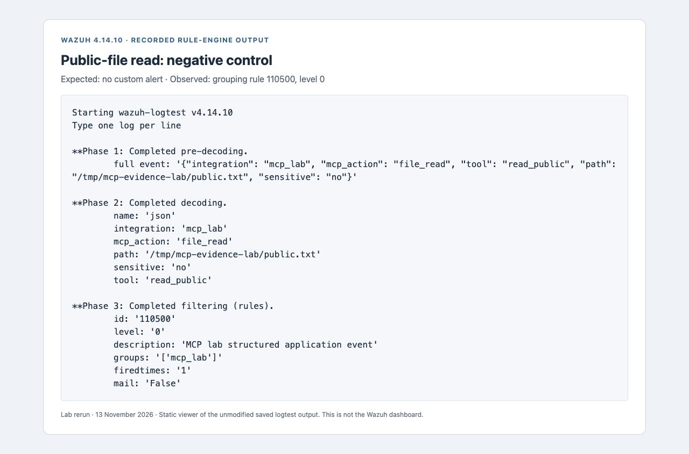

Evaluating MCP tool activity with Wazuh
A practical walkthrough of MCP telemetry, Wazuh path-based rules, ATT&CK mappings, and explicit validation limits.
AI applications use the Model Context Protocol (MCP) to connect to tools that can read files, execute commands, and interact with other services. These capabilities create activity that security teams need to understand and monitor.
This write-up demonstrates how to represent MCP tool activity as structured logs and evaluate it with custom Wazuh detection rules. The original run performed four controlled actions and validated eight test cases: three expected detections and five controls. The reviewer revision below moves path classification into Wazuh and expands process coverage. A fresh 70-case Wazuh run passed in a disposable GitHub Codespace on 16 November.
Validation scope: the lab uses Wazuh 4.14.10 to test application-log decoding and rule matching. The recorded eight-case run applies to the original rules. The revised rules passed 70/70 cases in Wazuh 4.14.10: 48 expected detections and 22 negative controls. Linux host telemetry, agent collection, and end-to-end alert delivery remain outside the validated scope.
Understanding MCP tool activity
MCP is a protocol through which an application discovers and calls tools provided by a server. In its stdio transport, a client launches a server subprocess and exchanges JSON-RPC messages over standard input and output. Tool operations execute as normal application code, subject to the permissions of the server process. A process is a running instance of a program; its permissions determine which files and system operations it can access.
File access and process execution are relevant to security monitoring because a tool may perform actions beyond its intended purpose. Microsoft’s June 2026 investigation of MCP tool poisoning describes why moving from generated text to actions changes the impact of abuse. In this lab, a scripted client invokes each tool directly, producing repeatable actions without involving a language model.
The experiment evaluates the resulting activity and its logs. It does not test prompt injection or demonstrate that an attacker can cause an AI agent to invoke a tool.
Getting telemetry from real MCP deployments
Real MCP deployments do not automatically emit {"integration":"mcp_lab",…}. This is the lab’s normalized schema. Choose a collection point, inspect what it actually records, and adapt those records before applying the rules:
- Server SDK middleware or tool wrappers: wrap registered tool handlers and instrument completed file reads, process starts, and sends. Record request ID, server/tool identity and outcome. A requested file path in
tools/calldoes not prove a read happened. For stdio servers, use a separate JSON-lines file or stderr; stdout must remain dedicated to MCP JSON-RPC messages. - A logging proxy or gateway: observe
tools/callrequests and responses on the actual transport path. Remote deployments may use a gateway; local stdio servers need a subprocess wrapper. Such logs show protocol activity, not every file access or child process inside the server. Establish completed operations through server instrumentation or host telemetry. - Desktop and IDE client logs: inspect the client’s documented MCP/debug-log settings and log directory, then make a harmless call to check the available fields. Formats and paths vary; some clients record only transport errors. Normalize the available metadata without presenting a request as proof of execution.
Protect and rotate logs, restrict readers, and omit file contents, tool results, secrets, and authorization headers. Where available, retain timestamps, request IDs, server instance, PID and user identity for correlation. These are deployment recommendations; the minimal fixture does not populate all these fields.
For a completed operation, a normalizer can produce metadata such as this illustrative event:
{"integration":"mcp_lab","mcp_action":"file_read","path":"/home/example/.ssh/id_ed25519","tool":"read_file","request_id":"example-42"}The marker routes events into the rule group; it does not authenticate their source. Use canonical absolute paths resolved at the operation boundary, including symlinks and ... Emit executable as a resolved absolute executable and argument1 as argv[1], rather than parsing an arbitrary shell string. For a transfer, report source_path only when the collector knows which file supplied the bytes. A prior read request alone is insufficient provenance.
To collect a normalized JSON-lines file with a Wazuh agent, an example ossec.conf input is:
<localfile>
<log_format>json</log_format>
<location>/var/log/mcp/activity.jsonl</location>
</localfile>Install the custom rules on the manager under /var/ossec/etc/rules/, check that IDs 110500–110505 are available, and test representative records with wazuh-logtest. Validate configuration and restart the affected agent/manager through your normal change process. Verify file permissions, collection, ingestion and the resulting alert using a benign test event. This real-deployment collection path has not been tested by the lab. The repository’s telemetry guide explains the schema and remaining gaps.
Lab architecture and test scenarios
The lab contains two containers. The first runs a small Python MCP test server and its client. The second runs the Wazuh database and analysis services, allowing wazuh-logtest to evaluate events. An indexer, dashboard, and enrolled agent are not required for this rule-testing stage.
Scripted MCP client
↓ tools/call over stdio
Python test server → file read / shell execution / local HTTP transfer
↓ application-written JSON events
Test runner → wazuh-logtest → expected and observed rule IDsBoth containers use network_mode: none. The test server’s HTTP receiver binds to 127.0.0.1:8765 inside its own container; loopback still works. No port is published. The test server can access its lab code, temporary files, and evidence directory, rather than the host’s credential directories.
The client invokes four tools, each with a defined expected result:
| Tool | Actual behavior | Expected custom alert |
|---|---|---|
read_public | Read a generated public text file. | None |
read_dummy_secret | Read a generated file containing a fixed fake token. | 110501 |
spawn_shell | Run /bin/sh -c 'printf lab-child-process'. | 110502 |
send_dummy | POST the fake token to the local receiver, which checks its contents. | 110503 |
The file paths, shell command, and destination are fixed in the test server. All credentials are dummy values, and the transfer remains within the container. The revised fixture places the fake token in a temporary lab .env file and reports its path. Wazuh decides whether that path is sensitive; access does not bypass an operating-system permission.
Structured events and Wazuh-owned path policy
The revised fixture reports a completed read without assigning a sensitivity label:
{
"integration": "mcp_lab",
"mcp_action": "file_read",
"tool": "read_dummy_secret",
"path": "/tmp/mcp-evidence-lab/.env"
}Wazuh’s JSON decoder extracts the fields. Rule 110500 groups normalized MCP events at level zero. Rules 110501 and 110503 classify path and source_path using PCRE2. They cover .ssh/ contents, .env and .env.*, .aws/credentials, and .kube/config. A supplied sensitive=no cannot suppress a matching path, and sensitive=yes cannot promote a public path.
This is a path policy, not content inspection: public examples such as .env.example also match and need environment-specific tuning. A Wazuh CDB list is an alternative for centrally maintained explicit paths; this pack implements the regex version. A compromised event source can still forge paths or omit events.
These are the complete revised rules:
<group name="mcp_lab,">
<rule id="110500" level="0">
<decoded_as>json</decoded_as>
<field name="integration">^mcp_lab$</field>
<description>MCP normalized application event</description>
</rule>
<rule id="110501" level="8">
<if_sid>110500</if_sid>
<field name="mcp_action">^file_read$</field>
<field name="path" type="pcre2">(?:^|/)(?:\.ssh/|\.env(?:\.[^/]*)?$|\.aws/credentials$|\.kube/config$)</field>
<description>MCP tool read a credential-related path</description>
<mitre><id>T1552.001</id></mitre>
</rule>
<rule id="110502" level="8">
<if_sid>110500</if_sid>
<field name="mcp_action">^process_start$</field>
<field name="executable" type="pcre2">^/(?:usr/(?:local/)?)?bin/(?:sh|bash|dash|zsh|ksh|ash)$</field>
<description>MCP tool started a Unix shell</description>
<mitre><id>T1059.004</id></mitre>
</rule>
<rule id="110503" level="10">
<if_sid>110500</if_sid>
<field name="mcp_action">^network_send$</field>
<field name="source_path" type="pcre2">(?:^|/)(?:\.ssh/|\.env(?:\.[^/]*)?$|\.aws/credentials$|\.kube/config$)</field>
<description>MCP tool transferred data from a credential-related path (lab: loopback only)</description>
<mitre><id>T1048</id></mitre>
</rule>
<rule id="110504" level="8">
<if_sid>110500</if_sid>
<field name="mcp_action">^process_start$</field>
<field name="executable" type="pcre2">^/(?:usr/(?:local/)?)?bin/python(?:[23](?:\.[0-9]+)?)?$</field>
<field name="argument1">^-c$</field>
<description>MCP tool started Python inline code</description>
<mitre><id>T1059.006</id></mitre>
</rule>
<rule id="110505" level="8">
<if_sid>110500</if_sid>
<field name="mcp_action">^process_start$</field>
<field name="executable" type="pcre2">^/(?:usr/(?:local/)?)?bin/node(?:js)?$</field>
<field name="argument1" type="pcre2">^(?:-e|--eval)$</field>
<description>MCP tool started JavaScript inline code</description>
<mitre><id>T1059.007</id></mitre>
</rule>
</group>
The shell rule covers sh, bash, dash, zsh, ksh and ash under /bin, /usr/bin, and /usr/local/bin. Separate rules cover Python -c and Node -e/--eval when the flag is argv[1]. Ordinary script invocations remain outside the inline-code policy. Other interpreter locations, flags before -c, combined options, wrappers such as env, and other runtimes need additional normalization and tested rules. Legitimate tool execution can match; an alert alone does not establish abuse.
The transfer rule requires a reported source path matching the credential-path policy. Missing provenance means no match; it does not reconstruct the source of arbitrary or transformed bytes. The fixture now reports source_path=/tmp/mcp-evidence-lab/.env, a loopback destination, and byte count.
MITRE ATT&CK context
| Rule | Technique | Interpretation |
|---|---|---|
| 110501 | T1552.001 — Credentials in Files | A credential-related path was reported read; actual contents and malicious intent are unproven. |
| 110502 | T1059.004 — Unix Shell | A shell was started; authorized automation may do this. |
| 110503 | T1048 — Exfiltration Over Alternative Protocol | A transfer behavior analogy. The lab sends dummy data over loopback only; it demonstrates no external exfiltration. |
| 110504 | T1059.006 — Python | Inline Python execution. |
| 110505 | T1059.007 — JavaScript/JScript | Inline Node.js execution. |
The tags support triage and ATT&CK views in Wazuh. T1041 is not used because the lab establishes no command-and-control channel. Technique mappings describe potentially relevant behavior; they are not evidence of an adversary or successful credential theft.
Resolving a Wazuh field-name conflict
The first event schema used action. Writing <field name="action"> in the child rule caused the analysis daemon to reject the rules:
ERROR: Failure to read rule 110501. Field 'action' is static.Wazuh treats that name as a static field, so it cannot be matched through that dynamic-field expression. The event field was renamed to mcp_action and the rules were tested again. This illustrates why validation must include the Wazuh engine: valid JSON alone does not establish that a rule can load or match it.
The container startup restores the image’s packaged configuration and starts the database and analysis services required by logtest. The runner waits for the logtest socket, which indicates that the testing interface is available, before submitting events. This configuration supports the lab’s rule tests and should not be treated as a production deployment.
Original detection validation and results
Historical evidence: the following table and screenshots show the original 13 November rules, which used sensitive=yes. They do not validate the revised path or interpreter rules above.
In the original run, the client executed the four scenarios first. The verification script read their fresh events, added four constructed negative controls, and submitted each case to Wazuh. It checks the final rule ID against the expected outcome and saves the raw output.
| Case | Observed rule | Result |
|---|---|---|
| Read public file | 110500, level 0 | Pass: no custom alert |
| Read dummy secret | 110501 | Pass |
| Start shell | 110502 | Pass |
| Send dummy data | 110503 | Pass |
| Same sensitive-read fields, different integration | No rule reported | Pass: no custom alert |
| Ordinary Python process event | 110500, level 0 | Pass: no custom alert |
Transfer event with sensitive=no | 110500, level 0 | Pass: no custom alert |
| File-read event missing sensitivity | 110500, level 0 | Pass: no custom alert |
All eight test cases passed. “No custom alert” means that none of the three alerting child rules matched; the level-zero parent rule may still appear in the output. The five negative controls check specific matching conditions and do not establish a production false-positive rate.
For the dummy-secret read, the engine reported:

The message “Alert to be generated” confirms that the supplied event matches an alerting rule. It does not verify collection by an agent, ingestion by a running manager, or display in the Wazuh dashboard. The Wazuh logtest documentation explains the tool’s decoding and rule-testing role.
The public-file read provides a comparison. It is decoded successfully and matches only the level-zero grouping rule. The sensitive-file detection does not match, which is the expected outcome for this control.

The recorded run includes the four generated events, all eight raw logtest outputs, and the machine-readable expected-versus-observed results.
Reviewer revision validation
The revision adds 66 constructed policy cases covering missing fields, unrelated sources, sensitivity-label overrides, credential and public look-alike paths, alternate shells, inline Python/Node calls, and ordinary script invocations. Static XML and regex checks passed. These checks use Python regex for patterns that share its syntax; they do not establish Wazuh PCRE2 behavior or successful engine rule loading.
The updated runner submitted four newly executed fixture events plus those 66 regression cases to Wazuh 4.14.10 in a two-core, 8 GiB GitHub Codespace. All 70 cases passed: 48 expected detections and 22 negative controls. Every event decoded as JSON. Inspection of the raw output confirmed the expected rule levels and ATT&CK IDs for every positive case, and no alert-generation message for every negative control. The new recorded run includes all raw outputs, generated events, environment details and tested-source hashes. The runner removed its containers, and the Codespace was deleted after the evidence was downloaded. Independent host collection and end-to-end alert delivery remain future validation steps.
Interpreting the evidence and its limitations
The test server both performs the action and records it. This creates a dependency on the integrity of the application’s logging. A compromised server could omit an event, forge a path, source path, or executable. Consequently, a successful rule match establishes how Wazuh interprets the supplied event, rather than independently verifying the underlying action.
The current event schema also has limitations. The events have no request identifier, timestamp, PID, parent PID, or user identity. A PID is a process identifier; a parent PID identifies the process that launched it. Wazuh now classifies sensitivity from the reported path, but that path is still application-supplied. The loopback POST demonstrates a local transfer, not internet exfiltration. And an executable name by itself says little about whether its invocation was authorized.
The next validation stage is to compare application events with independently collected Linux file-access and process-execution records. Those records should preserve process identity, parent-child relationships, and the relevant user account. Repeating the scenarios with application logging disabled would then establish whether the actions remain observable through host telemetry.
Independent host collection has not yet been tested in this lab. Its deployment requirements and behavior must be validated before extending the detection claims.
Reproducing the lab
The lab requires Docker Compose and Python 3 on the host. Container images are pinned by digest to preserve the tested versions. The Wazuh image uses the amd64 architecture, which requires emulation on Apple Silicon.
git clone https://github.com/SAMsploit1/mcp-wazuh-lab.git
cd mcp-wazuh-lab
sh scripts/run.shFor static checks before the engine run, use python3 tests/check_policy.py. The revised 70-case engine run is recorded under results/2026-11-16/.
The runner starts Wazuh, waits for the socket, executes the test server, verifies the cases, and removes the lab containers on exit. It writes generated evidence under evidence/, which is excluded from Git. If the runner is killed before cleanup, run docker compose down from the repository directory.
Source code and recorded results
The repository contains the test server, rules, regression runner, and recorded results. The next milestone is independent Linux telemetry and an end-to-end ingestion test.
MCP Wazuh lab on GitHub ↗